<!-- Documentation XQuad (c)1995-2000 AXENE contact axene@axene.org>
<html>

<head>
<title>Horizontal Toolbar: &quot;Graphic Manipulation&quot;</title>
</head>

<body BGCOLOR="#FFFFFF" BACKGROUND="Images/back.gif" TEXT="#000000">

<p ALIGN="right">  </p>

<p><br>
<br>
The graphic manipulation toolbar provide tools to create, configure bars, curves, layers,
pies chart, etc. The user can modify the stacking order of the graphics frames.<br>
<br>
</p>

<hr>

<p align="center"><br>
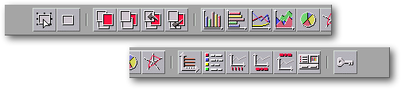 <br>
<small><i>Screen shot: Graphic manipulation toolbar</i></small></p>

<p><br>
</p>

<hr>

<p><br>
</p>

<h3>First section of the toolbar:</h3>

<ul>
  <li>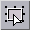 <a NAME="select_mode_icon">The first button <strong>exits
    frame creation mode</strong>. The second button on this toolbar shifts XQuad into frame
    creation mode. This button allows the user to return to default frame or cell selection
    mode</a><br>
    &nbsp;</li>
  <li> <a NAME="rectangle_frame_icon">The second button <strong>creates
    a rectangular frame</strong>. <ol>
      <li>Click on the display screen to place one point of the rectangle.</li>
      <li>Move the mouse to stretch out the rectangular form.</li>
      <li>Click again to place the opposite diagonal point of the rectangle to create the frame.</a></li>
    </ol>
    <a NAME="rectangle_frame_icon"><p>This operation is affected by magnetism. It can be
    cancelled during step two by clicking the right mouse button. To create a square, press <tt>shift</tt>
    while stretching the rectangle.</a></p>
    <p>&nbsp;</p>
  </li>
</ul>

<h3>Second Section of the toolbar:</h3>

<p>All frames are positioned on different planes. With these tools the user may modify the
stacking order of frames. 

<ul>
  <li> <a NAME="foreground_icon">The first button <strong>shifts
    the selected frames to the foreground</strong>, above all others.</a><br>
    &nbsp;</li>
  <li>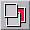 <a NAME="background_icon">The second <strong>button
    shifts the selected frames to the background</strong>, beneath all others.</a><br>
    &nbsp;</li>
  <li>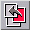 <a NAME="forward_icon">The third button <strong>brings
    the selected frames forward by one plane</strong>, exchanging its place with the frame
    just above it.</a><br>
    &nbsp;</li>
  <li>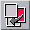 <a NAME="backward_icon">The last button <strong>pushes
    the selected frames backwards by one plane</strong>, exchanging its place with the frame
    just below it.</a></li>
</ul>

<p><br>
</p>

<h3>Third Section of the Toolbar:</h3>

<ul>
  <li>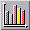 <a NAME="vbars_icon">The first button <strong>creates
    or changes a histogram graph</strong>. A histogram represents values using vertical bars.
    The X-axis of the graph is divided equally between the various series, and each series
    section is subdivided equally for each value. The histogram legend displays a color for
    each value of the series.</a><br>
    &nbsp;</li>
  <li>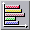 <a NAME="hbars_icon">The second button <strong>creates
    or changes a bar graph</strong>. A bar graph represents values using horizontal bars. The
    Y-axis of the graph is divided equally between the various series, and each series section
    is subdivided equally for each value. The bar graph legend displays a color for each value
    of the series. </a><br>
    &nbsp;</li>
  <li>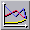 <a NAME="curves_icon">The third button <strong>creates
    or changes a line graph</strong>. A line graph represents values using a two dimensional
    line for each series. The X-axis is divided equally between the various series values. The
    line graph legend displays a color for each value of the series.</a><br>
    &nbsp;</li>
  <li>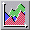 <a NAME="areas_icon">The fourth button <strong>creates
    or changes an area graph</strong>. An area graph represents values using a two dimensional
    surface area for each series. The X-axis is equally divided between the various series
    values. The area graph legend displays a color for each value of the series. These values
    are added to corresponding values of preceeding series before being reported in the graph.</a><br>
    &nbsp;</li>
  <li> <a NAME="pies_icon">The fifth button <strong>creates or
    changes a pie graph</strong>. Pie graphs represent values using angular sections of a
    circle for each series. Each disc is divided into positive values above zero (zero and
    negative values are not included). Each section is identified by its color and the amount
    of space it occupies on the disc. A pie graph legend displays a color for each value of
    the series. A pie graph has no Y-axis.</a><br>
    &nbsp;</li>
  <li> <a NAME="radars_icon">The last button <strong>creates
    or changes a radar graph</strong>. A radar graph represents values using two dimensional
    polar lines resembling a radar antenna. For each X-value a line extends forth from a
    central point, equally spaced from other lines. Each series value is reported on
    corresponding axes, creating a colored line between the axes. The radar graph legend
    displays a color for each series.</a></li>
</ul>

<p><br>
The buttons in this section fulfill two roles: creation of framed graphs based upon data
from selected cells, or alteration of a selected graph. The function of these buttons
therefore depends on what is selected: worksheet cells or a frame containing a graph. When
one of these buttons creates a new graph, XQuad shifts to <a HREF="HBar_Graphics.html#rectangle_frame_icon">frame creation mode</a>; once defined this
frame will contain the new graph. If XQuad cannot determine the exact <a HREF="Box_GraphSetup.html#geometry">area of a selected cell region</a>, the &quot;<a HREF="Box_GraphSetup.html">Graph Configuration</a>&quot; dialog box is automatically
opened. </p>

<p><br>
</p>

<h3>Fourth Section of the Icon Bar:</h3>

<p>The buttons in this section modify the configuration of the selected graph. 

<ul>
  <li>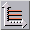 <a NAME="y_axes_icon">The first button <strong>displays/hides
    the Y-axis</strong>. This button can be applied to all graph types except pie graphs.
    Y-axis lines will be extended across the entire width of the graph.</a><br>
    &nbsp;</li>
  <li>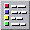 <a NAME="legend_icon">The second button <strong>displays/hides
    the legend</strong>. Depending upon graph type the legend can be displayed or hidden if
    series or X-axis titles exist. </a><br>
    &nbsp;</li>
  <li> <a NAME="absc_name_icon">The third button <strong>displays/hides
    X-axis titles</strong>. X-axis titles exist when the </a><a HREF="Box_GraphSetup.html#absc_label_button">third button</a> of the <a HREF="Box_GraphSetup.html">graph configuration</a> dialog box is engaged.<br>
    &nbsp;</li>
  <li> <a NAME="series_name_icon">The fourth button <strong>displays/
    hides series titles</strong>. Series titles exist when the </a><a HREF="Box_GraphSetup.html#legend_button">fifth button</a> of the <a HREF="Box_GraphSetup.html">graph configuration</a> dialog box is engaged.<br>
    &nbsp;</li>
  <li>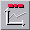 <a NAME="graph_name_icon">The fifth button <strong>displays/hides
    the graph title</strong>. A graph title exists only if series titles and X-axis titles
    exist.</a><br>
    &nbsp;</li>
  <li> <a NAME="setup_icon">The last button <strong>changes
    the area of cell regions which are the source of values reported in the graph</strong>.
    This button opens the </a><a HREF="Box_GraphSetup.html">graph configuration</a> dialog
    box.</li>
</ul>

<p><br>
</p>

<h3>Last Section of the Toolbar:</h3>

<ul>
  <li> <a NAME="lock_icon">This button<strong> locks selected
    frames</strong>. Locking a frame prohibits all movement and modification of the frame. A
    locked frame within a selection can render the entire selection inalterable. The mouse
    cursor takes on the shape of a &quot;Do Not Enter&quot; sign when pointed at a selected
    locked frame. This button is engaged when one of the frames in a selection is locked. To
    unlock a frame selection, deactivate this button.</a></li>
</ul>

<p><br>
</p>

<hr>

<p ALIGN="right"></p>
</body>
</html>
